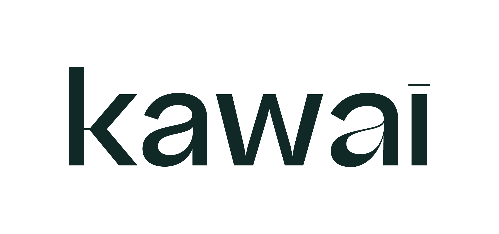

Valorização de fachada e acesso
Composições em escala arquitetônica: leitura rápida e manutenção fluida.


Solicitar diagnósticoKawai Garden para ativos de alto padrão
Paisagismo corporativo para fachadas, recepções e áreas comuns que valorizam prédios e sedes empresariais com elegância e manutenção previsível.
Decisores de facilities e diretoria buscam mais que visual: chegada organizada, ruído visual zerado, percepção de cuidado elevada e experiência premium sustentável.
Composições em escala arquitetônica: leitura rápida e manutenção fluida.
Projeto alinhado: zero retrabalho, falhas visuais ou desgaste operacional.
Verde que reforça arquitetura, marca e expectativas de stakeholders.

O jardim certo cria uma leitura imediata de cuidado antes mesmo do visitante chegar à recepção.
Insolação, fluxos, arquitetura e restrições.
Espécies, composição, cronograma e ROI claro.
Equipe dedicada para padrão impecável.
Sempre apresentável e sustentável.
Projetos reais de paisagismo corporativo com contexto, decisão técnica e resultados mensuráveis.

Contexto: acesso principal com grande circulação e necessidade de reforçar a imagem institucional logo na chegada. Resultado: um espaço mais organizado, elegante e alinhado ao padrão premium da operação.

Contexto: jardins fragmentados sem identidade. Resultado: valorização percebida +20% para locatários.

Contexto: um espaço externo que precisava ganhar mais presença, mais verde e uma leitura mais refinada para uso diário. Resultado: uma área mais agradável, com paisagismo abundante, bancos integrados e composição que reforça o padrão do empreendimento.
“A relação entre os indivíduos e seu ambiente pode ser um determinante de como eles se sentem, agem e interagem com os outros”
REVISTA HUMAN SPACES: THE GLOBAL IMPACT OF BIOPHILIC DESIGN IN THE WORKPLACEAs dúvidas mais comuns sobre paisagismo corporativo e predial, respondidas.
Na Kawai, começamos medindo insolação exata (norte/sul) e fluxo de chegada para espécies que crescem controlado entre 1,5-3m — como Phoenix canariensis com base podada. Isso cria presença imediata sem tapar janelas ou dar trabalho na manutenção. A poda semestral e irrigação automática deixam tudo sempre impecável pros facilities.
Fazemos gramados esportivos resistentes (tipo Zoysia) com canteiros geométricos que síndicos adoram pela circulação fácil e baixa manutenção. Usamos espécies nativas que dispensam adubo caro e crescem no ritmo do condomínio. O resultado é área comum que valoriza a cota e deixa moradores orgulhosos.
Fazemos diagnóstico gratuito com visita pra te dar número exato em 48h, já com espécies, cronograma e plano de ROI claro pra diretoria aprovar. Fachada pequena sai entre R$45-65/m², área comum R$35-55/m² e manutenção mensal R$8-15/m² — mas isso varia muito pelo escopo específico do seu projeto.
Fazemos completo com equipe própria: semanal pros gramados ficarem perfeitos, quinzenal pros arbustos e semestral pras palmeiras. Isso elimina reclamações porque o facilities nunca mais ouve "o jardim tá feio". Tudo previsto desde o projeto pra não ter surpresa.
Diagnóstico sai em 48h, projeto 3D em 7 dias, implantação pequena em 15 dias e grande (500m²+) em 30-45 dias. Cronograma é lei — atraso tem multa nossa. Você recebe PDF com Gantt detalhado no primeiro contato pra mostrar pra diretoria.
Valoriza muito. Empresas contratam mais fácil com sede bem paisagada (employer branding), condomínios locam mais rápido e cotas sobem porque vizinhos copiam. É investimento que paga sozinho em 18-24 meses pela percepção premium que cria no mercado.
Formulário rápido para qualificar seu projeto. Receba retorno técnico em até 24h.
Chamar no WhatsAppPreencha o formulário abaixo para falar com um dos nossos consultores: